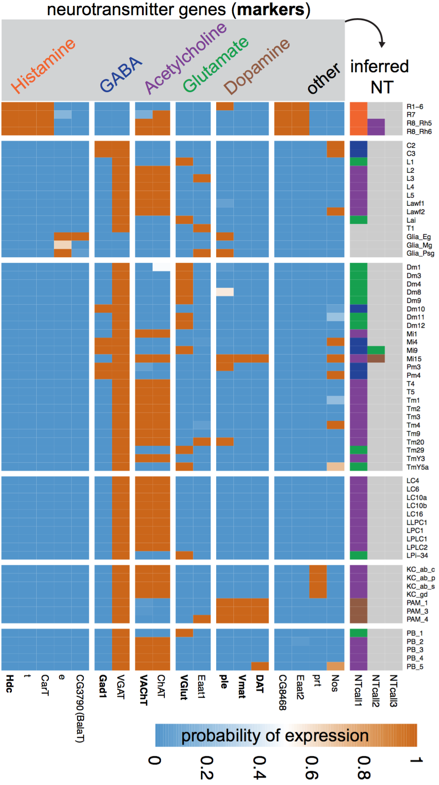
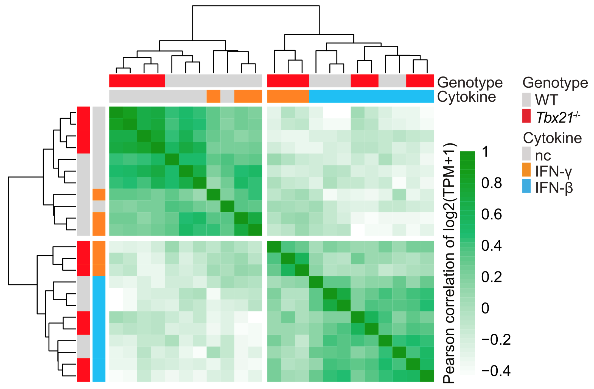
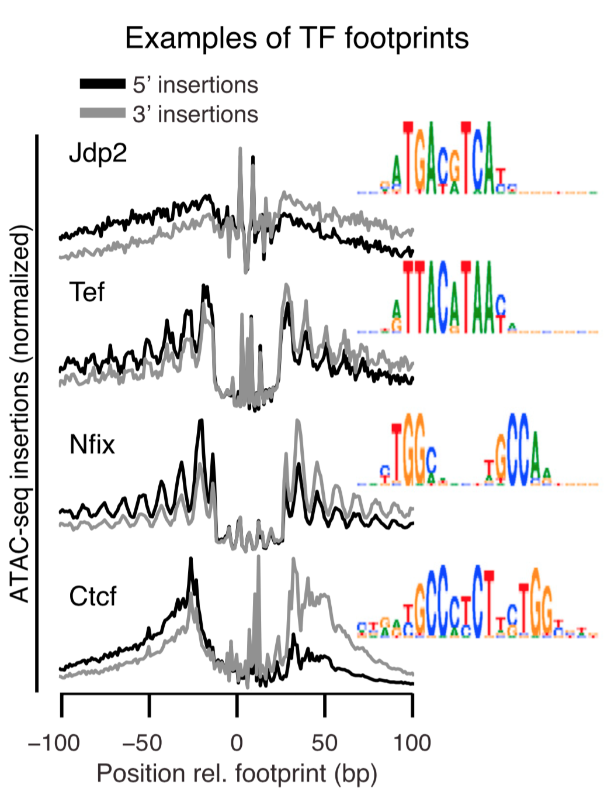
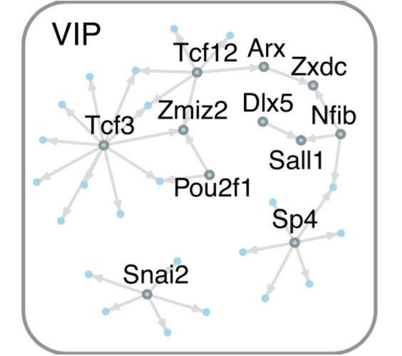

Bio
As a quantitative biologist, I enjoy solving biomedical puzzles with computation, statistics, and visualization.
I work at the NIH as a Staff Scientist in John O'Shea's lab for lymphocyte cell biology. I trained in computational genomics with Sean Eddy at HHMI Janelia (Postdoc, Staff 2007-2015) and computational structural biology with Andrej Sali at UCSF (Ph.D., Biophysics. 2003-2007). Before that I studied pharmacy (Pharm.D., Purdue 2001).
Download CV
|
Recent Projects
Using gene expression to explore neural circuit function. Different neurons express different sets of genes, but can this information help us understand how neural circuits work? To explore this question, we turned to the Drosophila visual system, a well-established model for studying the development, genetics, and structure of neural circuits. Together with Aljoscha Nern (Janelia) and Lee Henry (Janelia, now CSHL) we combined genetic tools to access individual cell types, a method to profile their nuclear transcriptomes, and a probabilistic model to interpret these measurements. We found that this information indeed helps illuminate circuit function, ranging from fundamental properties such as the neurotransmitters used at each synapse to higher-level circuit feedback mechanisms.
→ Gene expression levels measured by TAPIN-seq allow the inference of neurotransmitters produced by visual system neurons (row=cell type, column=gene).
Davis & Nern et al. 2018.
|
 |
| 
|
A lineage-determining transcription factor also regulates signal response. T-bet is the master transcription factor that specifies the T helper 1 lineage of T lymphocytes. Using a suite of genomic approaches, we found an additional and unexpected role for T-bet in repressing the Type I Interferon expression program.
← In the absence of T-bet (red), T cells incorrectly respond to interferon-γ (orange) as though it was interferon-β (blue).
Iwata & Mikami, ..., O'Shea J+, Davis FP+, Kanno Y+. Immunity, 2017
|
Mapping the epigenetic and transcriptional landscape of neurons. Together with Lee Henry (Janelia, now CSHL), we developed a genetic approach to measure genomic properties in individual neuronal cell types. This technology reveals distinct gene expression, histone modification, and chromatin accessibility landscapes. We first demonstrated this technology in the Drosophila brain, using Polycomb-associated histone marks and gene expression to predict TFs critical for cell identity. In collaboration with Alisa Mo (Jeremy Nathans lab, Hopkins), we demonstrated the ability of this approach to profile neuronal cell types in the mouse cortex.
→ Cell type-specific genomics identifies footprints of transcription factor (TF) binding and predicts TF regulatory networks active in specific cell types, such as VIP inhibitory neurons.
Mo*, Mukamel*, Davis*, Luo*, et al. Neuron. 2015
Henry, Davis, Picard, Eddy. NAR. 2012
|
 |
Papers
Google Scholar
* co-first author, + corresponding authors
-
Neuropeptide CGRP Limits Group 2 Innate Lymphoid Cell Responses and Constrains Type 2 Inflammation.
Nagashima H, Mahlakõiv T, Shih HY, Davis FP, Meylan F, Huang Y, Harrison OJ, Yao C, Mikami Y, Urban JF Jr, Caron KM, Belkaid Y, Kanno Y, Artis D, O'Shea JJ. Immunity. (2019) online ahead of print. (reprint).
Data: NCBI GEO GSE131996
-
Retinoic Acid Receptor Alpha Represses a Th9 Transcriptional and Epigenomic Program to Reduce Allergic Pathology.
Schwartz DM, Farley TK, Richoz N, Yao C, Shih HY, Petermann F, Zhang Y, Sun HW, Hayes E, Mikami Y, Jiang K, Davis FP, Kanno Y, Milner JD, Siegel R, Laurence A, Meylan F, O'Shea JJ. Immunity. (2019) 50 (1): 106-120. (reprint).
Data: NCBI GEO GSE123501
-
Nuclear transcriptomes of the seven neuronal cell types that constitute the Drosophila mushroom bodies.
Shih MF*, Davis FP*, Henry GL+, Dubnau J+. G3. (2019) 9 (1): 81-94. (reprint).
Preprint: bioRxiv 412569. (preprint).
Code: github.
Data: NCBI GEO GSE119629
-
A genetic, genomic, and computational resource for exploring neural circuit function.
Davis FP*, Nern A*, Picard S, Reiser MB, Rubin GM, Eddy SR, Henry GL. under review.
Preprint: bioRxiv 385476. (preprint).
Code: github. Data: NCBI GEO GSE116969
-
Odorant binding protein 69a connects social interaction to modulation of social responsiveness in Drosophila.
Bentzur A, Shmueli A, Omesi L, Ryvkin J, Knapp JM, Parnas M, Davis FP, Shohat-Ophir G. PLoS Genetics (2018) 14(4): e1007328. (reprint).
-
A dynamic interplay of enhancer elements regulates Klf4 expression in naïve pluripotency.
Xie L, Torigoe SE, Xiao J, Mai DH, Li L, Davis FP, Dong P, Marie-Nelly H, Grimm J, Lavis L, Darzacq X, Cattoglio C, Liu Z, Tjian R. Genes Dev (2017) 31(17):1795-1808. (reprint).
-
Subset- and tissue-defined STAT5 thresholds control homeostasis and function of innate lymphoid cells.
Villarino AV*, Sciume G*, Davis FP, Iwata S, Zitti B, Robinson GW, Hennighausen L, Kanno Y, O'Shea JJ. J Exp Med (2017) 214(10:2999-3014. (reprint).
-
The transcription factor T-bet limits amplification of type I IFN transcriptome and circuitry in T helper 1 cells.
Iwata S*, Mikami Y*, …, O’Shea JJ+, Davis FP+, Kanno Y+. Immunity (2017) 46(6): p983-991.e4. (reprint).
Preview by Lazarevic, Szabo, and Glimcher: T-bet Runs INTERFERence.
Data: GEO GSE96724
-
BACH2 immunodeficiency illustrates an association between super-enhancers and haploinsufficiency.
Afzali B*, Gronholm J*, Vandrocova J*, … Davis FP …, Cooper N+, Laurence ADJ+. Nature Immunology (2017) 18: 813-823. (reprint).
-
Evolved Repression Overcomes Enhancer Robustness.
Preger-Ben Noon E, Davis FP, Stern DL. Dev Cell (2016) 39(5): 572-584. (reprint).
-
Developmental acquisition of regulomes underlies innate lymphoid cell functionality.
Shih HY*, Sciume G*, Mikami Y*, Guo L, Sun HW, Brooks SR, Urban Jr JF, Davis FP, Kanno Y, O'Shea JJ. Cell (2016) 165 (5): 1120-1133. (reprint).
-
Epigenomic landscapes of retinal rods and cones.
Mo A, Luo C, Davis FP, Mukamel EA, Henry GL, Nery JR, Urich MA, Picard S, Lister R, Eddy SR, Beer MA, Ecker JR, Nathans J. eLife (2016). 5:e11613. (reprint).
Data: GEO GSE72550
-
A metabolic switch for Th17 pathogenicity.
Davis FP+, Kanno Y, O'Shea JJ+. Cell (2015). 163:1308-1310 (commentary). (reprint).
-
Epigenomic signatures of neuronal diversity in the mammalian brain.
Mo A*, Mukamel EA*, Davis FP*, Luo C*, Henry GL, Picard S, Urich MA, Nery JR, Sejnowski TJ, Lister R, Eddy SR, Ecker JR, Nathans J. Neuron. (2015) 86(6): 1369-1384. (reprint)
Selected as Issue Highlight, previewed by Steve Henikoff.
Data: GEO GSE63137
-
NSF Workshop Report: Discovering General Principles of Nervous System Organization by Comparing Brain Maps Across Species.
Striedter GF, Belgard TG, Chen C, Davis FP, Finlay BL, Gunturkun O, Hale ME, Harris J, Hecht EE, Hof PR, et al.
Brain, Behavior and Evolution (2014). 83: 1-8. doi:10.1159/000360152 (reprint).
-
Transcription factors that convert adult cell identity are differentially Polycomb repressed.
Davis FP and Eddy SR. PLoS One (2013). 8(5): e63407. doi:10.1371/journal.pone.0063407 (reprint).
-
Cell-type specific genomics of Drosophila neurons.
Henry GL, Davis FP, Picard S, Eddy SR. Nucleic Acids Res (2012). 40 (19): 9691-9704. (reprint).
Designated feature article.
Data: GEO GSE37027
-
Phosphorylation at the interface.
Davis FP. Structure (2011). 19(12):1726-1727 (commentary). (reprint).
-
Gene expression analysis in the parvalbumin-immunoreactive PV1 nucleus of the mouse lateral hypothalamus.
Girard F, Meszar Z, Marti C, Davis FP, Celio M. Eur. J. Neurosci (2011). 34(12): 1934-1943. (reprint).
-
Proteome-wide prediction of overlapping small molecule and protein binding sites using structure.
Davis FP. Molecular Biosystems (2011). 7(2): 545-557. (reprint).
Selected for the Virtual Journal of Biological Physics Research.
Software: HOMOLOBIND
-
The overlap of small molecule and protein binding sites within families of protein structures.
Davis FP and Sali A. PLoS Computational Biology (2010) 6(2): e1000668. (reprint).
Designated feature research.
Database: PIBASE.ligands
-
A tool for identification of genes expressed in patterns of interest using the Allen Brain Atlas.
Davis FP and Eddy SR. Bioinformatics (2009) 25(13):1647-54. (reprint).
Software: ALLENMINER
-
MODBASE, a database of annotated comparative protein structure models and associated resources
Pieper U, Eswar N, Webb BM, Eramian D, Kelly L, Barkan DT, Carter H, Mankoo P, Karchin R, Marti-Renom MA, Davis FP, Sali A. Nucleic Acids Res (2008). (reprint).
Database: MODBASE
-
Host-pathogen protein interactions predicted by comparative modeling.
Davis FP, Barkan DT, Eswar N, McKerrow JH, Sali A. Protein Science (2007) 16: 2585-2596. (reprint) (supplementary text).
Software: MODTIE.
Data: 
-
DBAli tools: mining the protein structure space.
Marti-Renom MA, Pieper U, Madhusudhan MS, Rossi A, Eswar N, Davis FP, Al-Shahrour F, Dopazo J, and Sali A. Nucleic Acids Research (2007) 35: W393-7. (reprint).
-
The AnnoLite and AnnoLyze Programs for Comparative Annotation of Protein Structures.
Marti-Renom MA, Rossi A, Al-Shahrour F, Davis FP, Pieper U, Dopazo J, and Sali A. BMC Bioinformatics (2007) 8:S4. (reprint)
-
Modeling protein interactions by analogy: Application to PSD-95.
Korkin D, Davis FP, Alber A, Luong T, Shen MY, Lucic V, Kennedy MB, Sali A. PLoS Computational Biology (2006) 2: e153. (reprint)
-
Protein complex compositions predicted by structural similarity.
Davis FP, Braberg H, Shen MY, Pieper U, Madhusudhan MS, Sali A. Nucleic Acids Research (2006) 34:2943-2952. (reprint).
Software: MODTIE
-
MODBASE: a database of annotated comparative protein structure models and associated resources.
Pieper U, Eswar N, Davis FP, Braberg H, Madhusudhan MS, Rossi A, Marti-Renom MA, Karchin R, Webb BM, Eramian D, Shen MY, Kelly L, Melo F, Sali A. Nucleic Acids Research (2006) 34: D291-D295. (reprint).
Database: MODBASE
-
Localization of protein-binding sites within families of proteins.
Korkin D, Davis FP, Sali A. Protein Science (2005) 14: 2350-2360. (reprint)
-
The Optimal Size of a Globular Protein Domain: A Simple Sphere-Packing Model.
Shen MY, Davis FP, Sali A. Chemical Physics Letters (2005) 405: 224-228. (reprint)
-
PIBASE: a comprehensive database of structurally defined protein interfaces.
Davis FP and Sali A. Bioinformatics (2005) 21(9): 1901-1907. (reprint).
Database: PIBASE.
-
A structural perspective on protein-protein interactions.
Russell RB, Alber F, Aloy P, Davis FP, Korkin D, Pichaud M, Topf M, Sali A. Current Opinions in Structural Biology (2004) 14(3): 313-24. Review. (reprint)
-
MODBASE, a database of annotated comparative protein structure models, and associated resources.
Pieper U, Eswar N, Braberg H, Madhusudhan MS, Davis FP, Stuart AC, Mirkovic N, Rossi A, Marti-Renom MA, Fiser A, Webb B, Greenblatt D, Huang CC, Ferrin TE, Sali A. Nucleic Acids Res (2004) 32 Database issue: D217-22. (reprint).
Database: MODBASE
|
Code
|
I've written several programs, mostly for protein structure and gene expression analysis, and all are available at github.
I also publish the code I use to make figures in papers, linked above.
|
 |
mdllabbook helps maintain a markdown-format lab notebook.
|
 |
ALLENMINER - A tool to identify genes expressed in patterns of interest using the Allen Brain Atlas.
|
 |
PIBASE - A comprehensive relational database of structurally defined protein interfaces.
|
 |
PIBASE.ligands - Overlapping small molecule and protein binding sites.
|
 |
MODTIE - Software to predict protein complex compositions using structural similarity.
|
 |
Predicted host-pathogen interactions - Host-pathogen protein interactions predicted by comparative modeling.
|
 |
HOMOLOBIND - proteome-wide prediction of protein and ligand binding sites using structure.
|
|